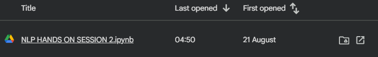

ACTIVITY 02
Hands-on Session 2
Name classification and text representation. The notebook works with the NLTK names corpus to build a simple gender classifier using the final letter of a name. It also introduces binary bag-of-words features and cosine similarity for comparing short text documents.
NLTK · Naive Bayes · CountVectorizerObjectives
- Load and inspect the NLTK names corpus.
- Create labelled male and female name examples.
- Represent each name using its final character as a feature.
- Train and test an NLTK NaiveBayesClassifier.
- Build binary bag-of-words features using CountVectorizer.
- Calculate cosine similarity between two text descriptions.
Concepts & Implementation
Load the names corpus
Download the NLTK names resource and inspect the number and sample of names.
Prepare labelled data
Combine names from male.txt and female.txt with their corresponding labels.
Extract features
Represent each name with a last_letter feature.
Train a classifier
Shuffle the feature sets, split training and testing data, and train a Naive Bayes classifier.
Represent documents
Use CountVectorizer(binary=True) to learn a vocabulary and transform text into vectors.
Compare documents
Use cosine_similarity() to compare vector representations of two OCR-related sentences.
Activity Materials
Click an image to view it at full size.

Learning Outcomes
- Prepared labelled examples from a built-in corpus.
- Implemented a simple feature-based Naive Bayes classification workflow.
- Explored binary bag-of-words representation.
- Used cosine similarity to compare document vectors.
- Observed a basic URL text download example using urllib.request.
Download Activity Files
Content on this page is organised from the materials supplied in the activity folder. Any interpretation beyond those materials has been kept to a minimum.